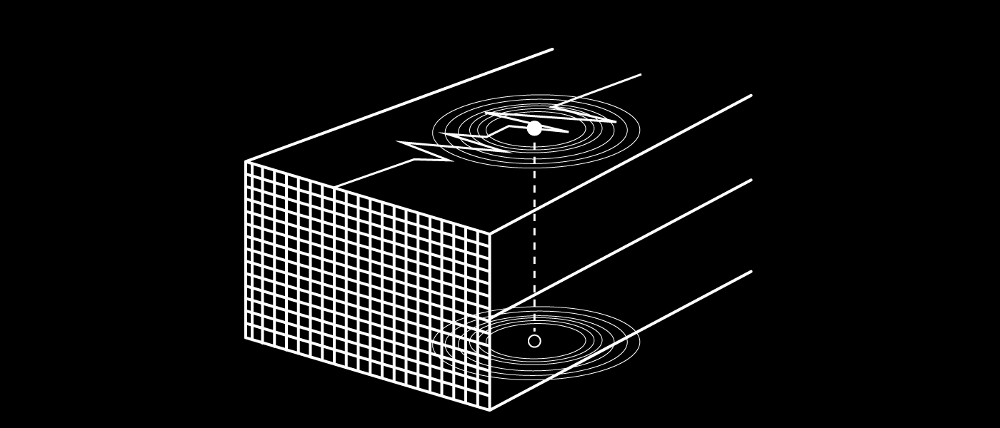

지구 내부의 에너지가 지표 밖으로 나와 땅이 갈라지고 흔들리는 현상
진앙
진원에 수직으로 연결된 지표면
지진파
지진으로 인해 발생한 진동의 움직임
진원
지진의 원인 에너지가 발생하는 곳
지진으로 인해 발생한 진동의 움직임, S파와 P파가 대표적으로 잘 알려져있다.
지진의 진행은 단순한 진동이 아닌 복합적인 진동들로 이루어진다.
지진의 세기를 수치화한 것들이 진도와 규모이다.
물
물은 공기와 함께 인간의 생존에 있어서 가장 중요한 물질입니다.
여의치 않은 상황이라면 물을 정수해서라도 꼭 섭취해야합니다.
담요
지진 발생 시 높은 확률로 정전이 일어나게 됩니다.
난방이 안되는 상황에서의 보온은 매우 중요하므로 담요를 꼭 사용해야합니다.
이불보
재난 상황에서도 편안한 잠자리는 중요합니다.
이를 위해 바닥에 깔 수 있는 휴대성 높은 이불보가 있으면 좋습니다.
통조림
재난 상황에서는 가공없이 먹을 수 있는 요리가 필요합니다.
그러한 대표적 식품이 통조림이죠. 하지만 중금속에 중독될 수 있으니 안전한지 확인하고 섭취합시다.
우산
비가 내린다고 비를 그냥 맞게 되면 체온이 크게 떨어집니다.
우산은 외투와 함께 체온을 유지해줄 수 있는 아주 중요한 수단입니다.
라디오
라디오는 외부의 정보를 수신할 수 있는 대표적 수단입니다.
전원식 라디오보다는 건전지나 동력으로
충전할 수 있는 라디오가 재난상황에서 알맞습니다.
호루라기
만약 당신이 잔해에 깔린다면 어떻게 위치를 알릴 수 있을까요?
호루라기는 체력을 보존하면서 자신의 위치를 알릴 수 있는 중요한 도구입니다.
의약품
재난 상황시 통증이나 상처는 생존을 위협하는 중대한 문제입니다.
의약품은 이를 막아주는 역할을 하며, 생존확률을 높여줍니다.
생존배낭 만들기
지진이 일어나면 가장 중요한 것은 생존에 필요한 자원 확보입니다.
미리 생존 배낭을 만들어 놓으면 지진이 일어나도 안심할 수 있습니다.
생존가방에는 무엇이 필요한지 키보드의 방향키나 스크롤바를 아래로 내려 확인해보세요.
지진 발생 시 주의사항
사람들은 지진이 발생했을 때 어떻게 대처해야할지 정확히 모르는 경우가 많습니다.
지진 대처법을 숙지한 사람의 생존확률은 그렇지 않은 사람보다 매우 높습니다.
아래에 나오는 내용은 지진 발생 시 대처방법입니다.
#1 낙하물을 주의하라.
지진이 일어났을 때 가장 주의해야하는 것은
낙하물입니다. 빠른 속도로 떨어지는 물체와
맞으면 중상을 입을 수 있습니다.
#2 탈출구를 확인하자.
지진이 일어났을 때 건물 내부에 있을 경우
건물이 붕괴하여 매몰될 가능성이 있습니다.
그렇기때문에 지진이 멈추면 탈출할 출구를
미리 파악해야합니다.
#3 유리창을 조심하자.
지진이 일어났을 때 낙하물과 함께
가장 주의해야하는 것은 유리창입니다.
유리 파편은 주변인에게 중상을 입힐 수 있습니다.
유리창에서 떨어지고
꼭 두꺼운 신발을 신고 지나가세요.
#2 언제나 화재주의.
지진 발생 후 일어나는 화재는
지진 사망자의 주 사망요인입니다. 화재를 막기
위해 가스벨브는 잠그고, 화기는 사용하지
않는 노력이 필요합니다.
주택에서의 지진
집안 내에서 가장 주의해야하는 것은 떨어지는 물건들입니다. 이를 위해 몸을 피할 수 있는 가구 밑으로 들어가는 것이 좋습니다. 지진이 멈추면 바로 탈출해 넓은 곳으로 이동합니다.
사무실에서의 지진
사옥 내에서 주의해야하는 것은 고정되지 않은 물건들입니다. 특히 복사기 같은 경우 부딪히면 큰 부상을 야기할 수 있습니다. 가능한 창가에서 멀리 떨어지며, 책상 밑에서 지진이 멈추길 기다립니다.
학교에서의 지진
교실 내의 유리창은 깨지면 몸에 박혀 상처를 입힐 수 있기 때문에 최대한 유리창과 멀리 떨어져야 합니다. 그리고 책상 밑으로 들어가 지진이 멈출때까지 기다린 후 선생님의 지시에 따라 운동장으로 이동합니다.
거리에서의 지진
옥외 광고판, 대형 유리창등의 낙하물을 조심해야합니다. 즉시 몸을 숙이고 공원, 운동장 같은 넓은 장소로 이동해야합니다. 자동차를 타고 있었다면 천천히 속도를 줄이고 하차 후 이동합니다.
주변의 재난 대피소 파악하기
지진이 일어나면 안전을 위해 넓은 장소로 이동해야합니다. 우리 주변의 재난 대피소를 파악 후 신속히 이동하는 것이 좋습니다. 사전에 피난갈 곳을 조사하는 것도 좋은 방법입니다.
상황에 따른 피난 방법
어쩔 수 없이 피난을 해야하는 상황이라면, 주변 상황을 잘 확인합시다. 집이 괜찮은 상태라면 자택 피난을 권하지만 그렇지 않다면 국가가 지정한 안전한 피난처로 이동합시다.
일상으로 돌아가기
지진은 우리에게 많은 것을 앗아갈 수도 있습니다. 하지만 사회는 다시 일어날 힘이 있습니다. 우리 모두 힘을 합치고 조금만 여유있게 기다립시다.